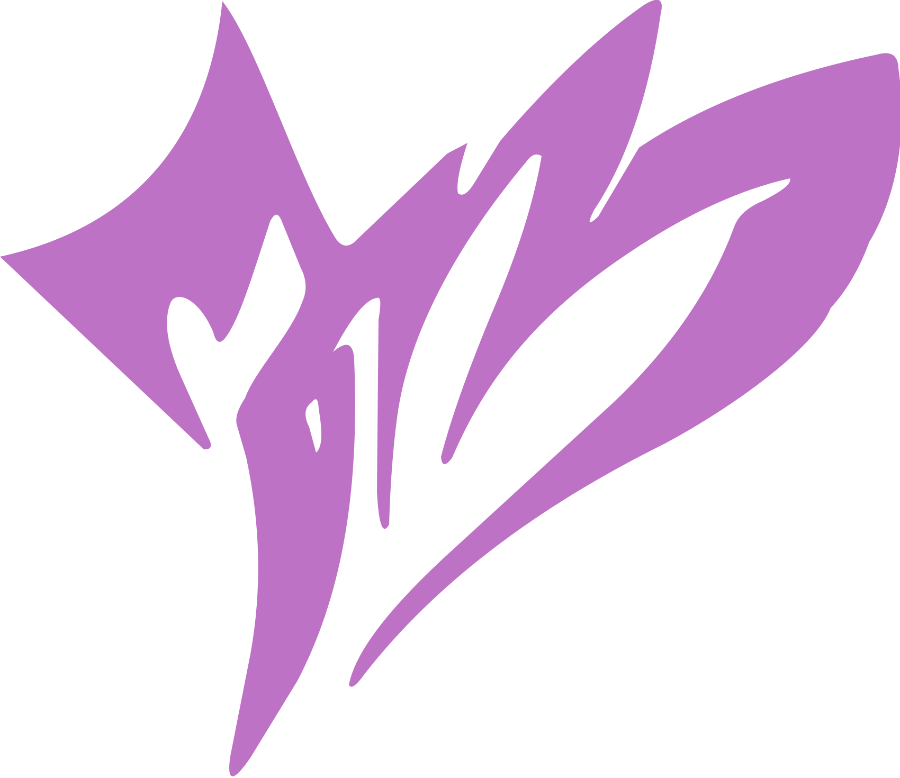

UN PAQUET. UNE AUTOROUTE. ZÉRO CERTITUDE.
Tout le monde
dans le bus.
Plus, moins ou égal ? Faites le bon choix.
Et surtout, évitez le retour à la case départ.

LE BUSLE JEU DE CARTESPlus, moins ou égal ? Faites le bon choix.
Et surtout, évitez le retour à la case départ.